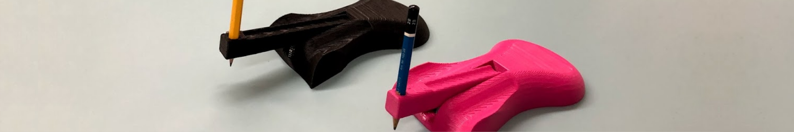

The Writing Mouse
The Writing Mouse is a handheld device that was developed by a team of 4 for a client who expressed frustrations with day-to-day writing. The device is used just like a mouse — place your hand on the device, and use your middle finger to press down on the lever, causing the writing instrument to leave a mark.
The main goal of the project was to provide an alternative method of writing for our client that fit their desires. The mouse is custom-designed for our clients hand measurements in order to maximize comfortability (this is why the middle finger is used instead of the index). Our team of 4 — Shaheer Amir, Natalie Dixon, Nicholas Grzelak, and I — collectively used our skills and carefully considered the needs and wants of the client to provide a solution tailored specifically for them to use.
There were many phases to this project, but I've broken down the conceptual process that lead to the final design into 3 stages below.
The Process
The first stage was brainstorming. Our team came up with a few different starting points, from a writing tripod to a magnetic pencil tip + magnetic pad you place below the paper. The idea for a device based around the shape of a mouse was brought up due to it's alternative form of handheld grip, sparking the thought that maybe it could be used as another way to hold a pencil. A low fidelity prototype was created out of some cardboard (from a pizza box!) and some tape. While low quality, the prototype simplified the idea greatly, making it much easier to present to others in order to gain some starting feedback.
Our team decided that we were going to stick with the mouse-shaped base for our writing device, and it was time to review and revise. Sketches were made in order to explore our design options, allowing us to specify details about key features each design had.
One design that was considered (top sketch seen on the left) was a mouse with a rolling ball underneath the device, allowing for more movement along each axis. This sketch also included a built-in mechanical pencil that could be refilled through the back of the device.
The second sketch in the picture is what our team decided on due to it's simplicity. The design is simply a mouse with a lever arm attached to the front, which is can be used to write by applying downwards pressure. There is also a hole at the end of this lever arm with an adjustable screw in order to fit a variety of writing instruments such as pencils, pens, markers, etc.
We then 3D printed a more polished prototype (the pink mouse). After testing it's abilities and how it performs, some minor adjustments to the front and back length of the mouse were made, as well as the length of the lever arm. These changes were made after gathering feedback from the client by letting them test the device itself. As the project due date was coming quickly, a final device was 3D printed (the black mouse) with focus on the client's suggested adjustments.